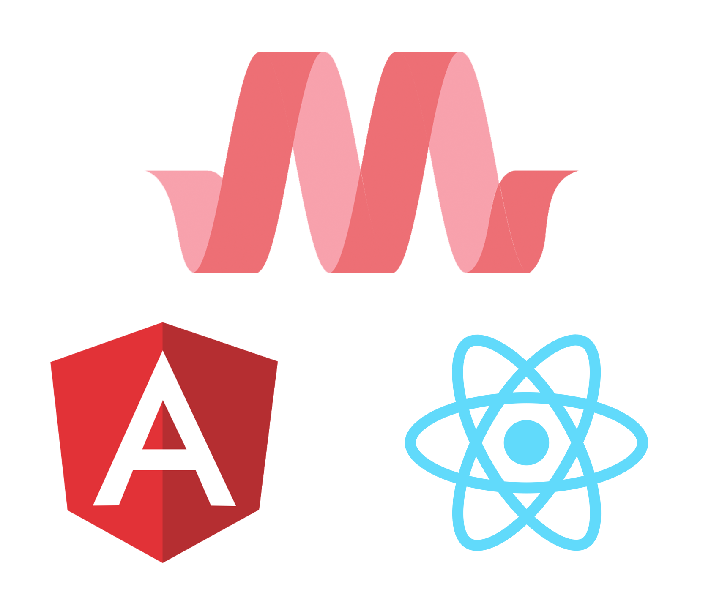

PROJECTS
-
OCT 2018
QUOTE GAME & RANDOMIZATION
A game designed with the intention of being completley reusable through randomization
Read More -
ONGOING
FRAMEWORK STUDIES
Under development. Whenever I pick up or test out a new framework (both css and js) I’ll usually create an application / website to showcase what they have to offer.
Read More -
JUN - SEP 2018
STARTPAGES
Startpages are homescreens for your browser. Startpages are easy to code, which allows you to practically spend 90% of your time on design and UI.
Read More -
JUL 2018
COL8 APPLICATION WORK

An electron file sharing application still under development. This page encompesses all my design reasonings, failed attempts and overall journey
Read More -
JAN - SEP 2017
OLD PROJECTS
This page includes a bunch of old retired projects made when I was inexperienced. Nice to look back at the past and see progress made.
Read More